Le isole Phi Phi sono un piccolo arcipelago nel mare delle Andamane, facenti parti dell’isola di Krabi (sulla quale siamo stati per una notte). Negli anni sono diventate LA meta turistica per eccellenza: viaggiatori di qualche decennio di anni fa ne criticano il cambiamento radicale subito negli anni. “Vale ancora la pena di andarci?” – era la domanda che leggevamo più di frequente sul web. Divisi tra commenti estremamente negativi e positivi, abbiamo deciso di dare un’opportunità a quella che fino a non molto tempo fa era considerata l´isola più bella di tutto il sud-est asiatico.
Nel 2004 lo Tsunami ha spazzato via tutto: palme, case, alberghi e persone. Ma ai tropici le ferite si rimarginano in fretta; la vegetazione ha ripreso rapidamente la sua crescita ed in poco tempo ha cancellato i danni fisici derivanti dall’immane disastro. Anzi, dal 2004 ha avuto inizio un processo di ricostruzione ancora meno sostenibile di quello precedente: alberghi multipiano, guesthouses, souvenir shops, centri diving e locali che fanno concorrenza a quelli di Formentera. La salvaguardia dell´ambiente è passata in secondo piano, sebbene a quanto pare abbiano dato maggior attenzione al problema di smaltimento dei rifiuti e abbiano costruito un nuovo impianto per il trattamento delle acque.
Si scrive Phi Phi Island, al singolare, ma in realtà le isole sono due: Phi Phi Don e Phi Phi Leh. Si può soggiornare solo su Phi Phi Don e poi con le barche durante il giorno si può raggiungere la più incantevole e preservata Phi Phi Leh. A Phi Phi Don ci sono due baie gemelle, Tonsai e Loh Dalam, raggiungibili a piedi in qualche minuto dal fulcro dell’isola. Decine e decine di barche che scortano turisti in ogni spiaggia partendo da queste baie chiaramente hanno finito per inquinarle; infatti non siamo riusciti a farci nemmeno un bagno talmente erano sporche. Inoltre abbiamo riscontrato alcuni problemini come la totale assenza di ombra sulle spiagge principali (no palme nè ombrelloni), la non visibilità del tramonto (il sole tramontava nella parte senza spiagge e irraggiungibile dell’isola) e l´antipatia delle persone del posto (completamente diverse rispetto alle cordiali persone incontrate nelle altre città thailandesi).
Ma non bisogna scoraggiarsi perché basta allontanarsi un po’ con la barca per trovare le spiagge idilliache per cui è tanto conosciuta Phi Phi Island!! A mezz’oretta-un’oretta di distanza a piedi (ci si può anche arrivare più velocemente in longtail – barchette lunghe che ospitano poche persone) abbiamo raggiunto Long Beach e Loh Moo Dee Beach. Loh Moo Dee è praticamente deserta: vi abbiamo trascorso più di mezza giornata senza la possibilità di mangiare perchè non c´era nemmeno un ristorante 🙂
Long Beach
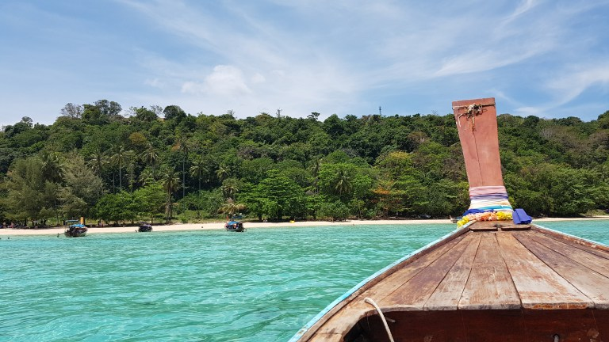 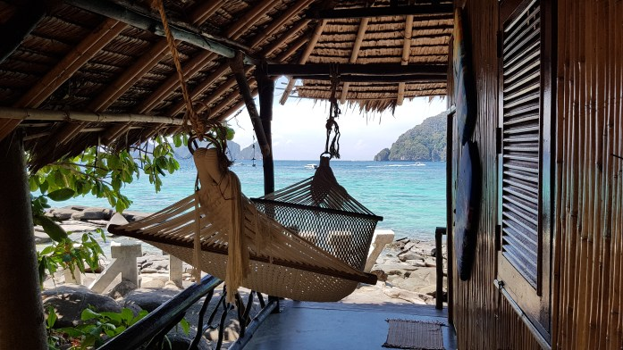 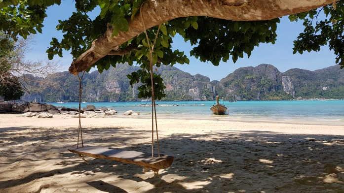 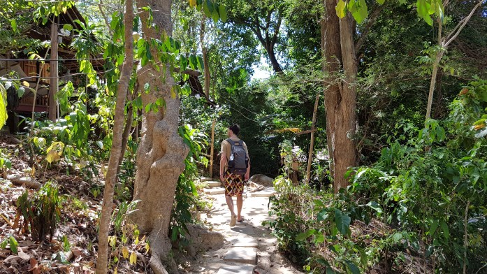 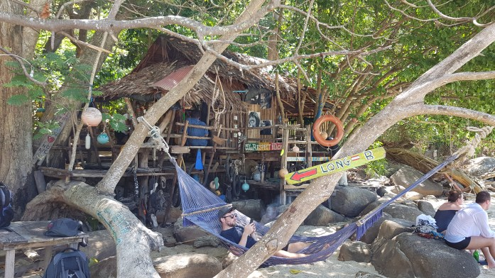Loh Moo Dee Beach
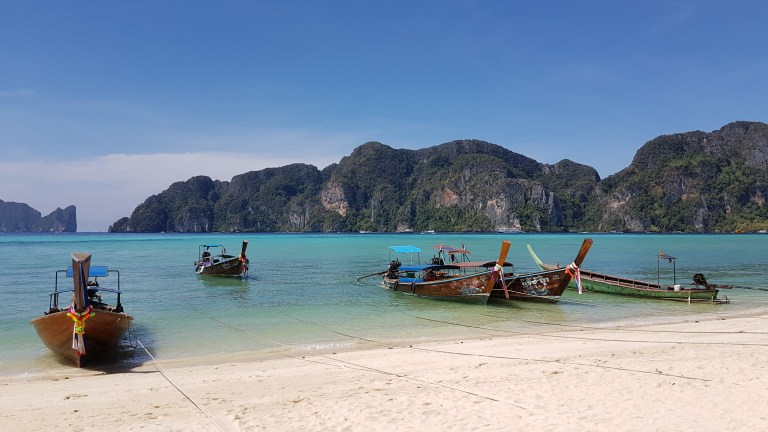 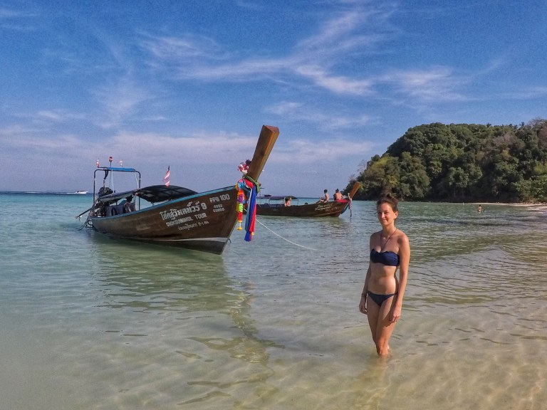Un giorno abbiamo fatto una gita in barca con molta altra gente intorno a Phi Phi Don passando per: Monkey Beach, Bamboo Island, Shark Point e per concludere abbiamo visto un bellissimo tramonto in mezzo al mare.
Monkey Beach
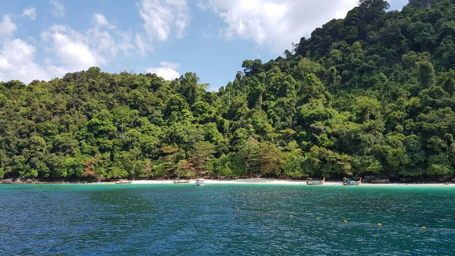 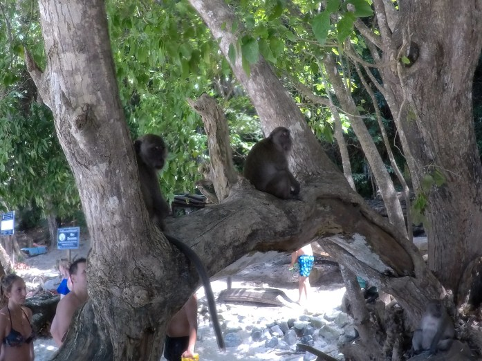Bamboo Island
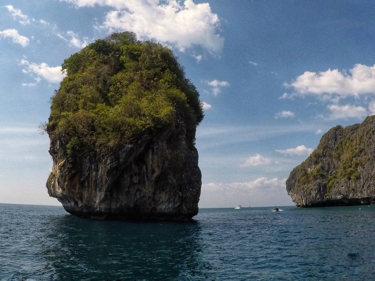 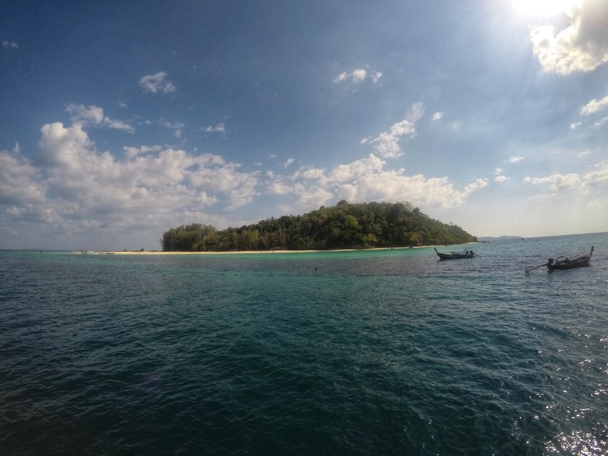 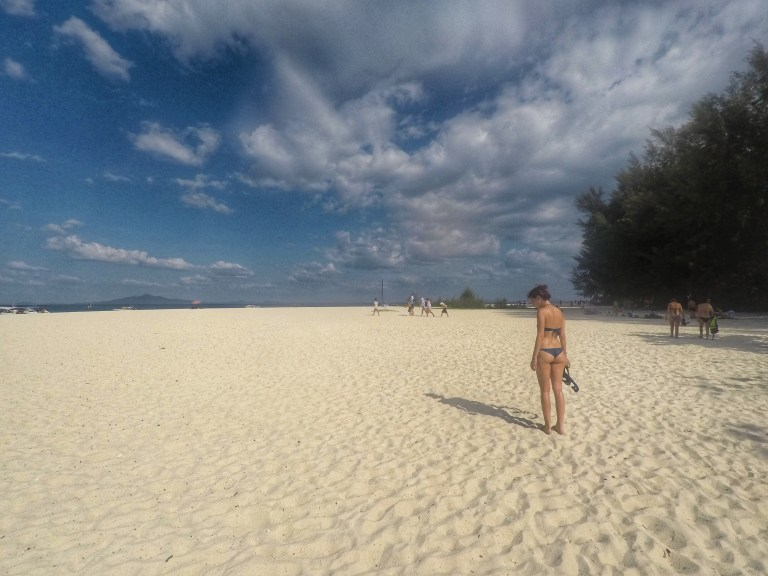Tramonto

Il penultimo giorno abbiamo noleggiato un longtail che ci ha portati ad esplorare Phi Phi Leh: la famosissima Maya Bay (da cui è tratta la celebre scena del film The Beach con Leonardo di Caprio), la Laguna di Pileh e la Viking Cave; avremmo voluto fermarci in un paio di altri posti ma quel giorno c´erano onde troppo grandi e tutti i longtail non potevano oltrepassare una certa zona per questioni di sicurezza. Sembrava di essere sulle montagne russe, divertentissimo!
Maya Bay
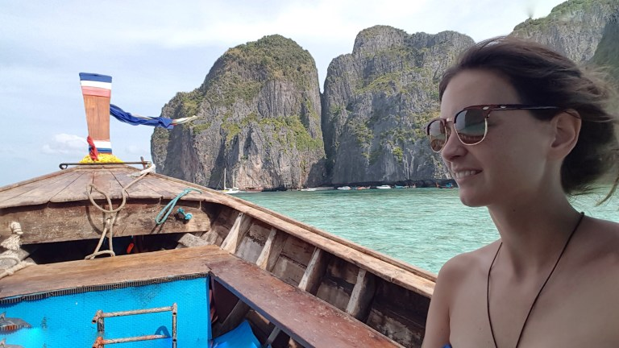
Pileh Lagoon
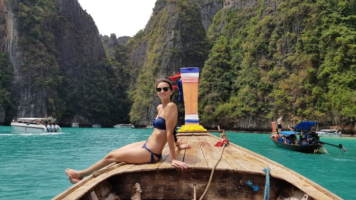 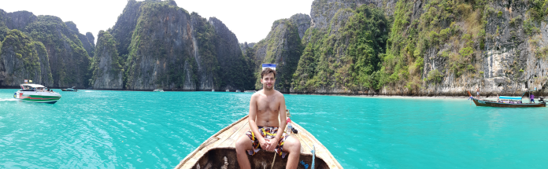Viking Cave
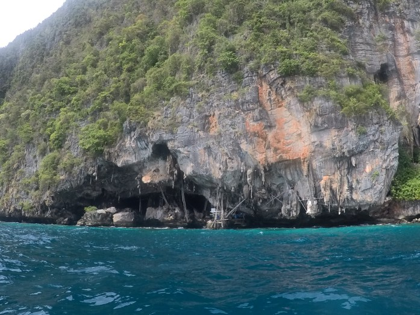Dalle precedenti foto si può chiaramente evincere che Phi Phi island ha ancora molto da offrire! Un piccolo paradiso di terra, acque cristalline e pesci! Centinaia di dolci gattini pullulano per ogni viuzza e vi è una totale assenza di motorini e auto. Con la bassa marea l´acqua si ritirava così tanto che il mare sembrava scomparire… non avevamo mai visto niente del genere… anche la vegetazione era particolare e molto fitta: abbiamo rivisto un genere di piantina che al tocco si chiude! Che bellaaa, è simpaticissima!!
Grazie al fatto che non abbiamo soggiornato durante l´alta stagione ci siamo potuti godere questi magnifici luoghi senza il sovraffollamento eccessivo che solitamente li caratterizza. Una simpatica signora, che a occhio e croce avrà avuto tra i 100 e i 150 anni, era a capo di un “servizio lavanderia”; ci siamo fatti lavare i vestiti accordandoci, per mezzo di gesti, sull’ora e sul prezzo; il giorno seguente ci presentiamo all’orario prefissato ma lei ridacchia e fa segno che “si è addormentata e non ha fatto in tempo a lavarceli” (o perlomeno questo è quello che abbiamo capito noi), così ci indica un altro orario sull’orologio; la sera stessa, al nuovo orario prefissato, ci ripresentiamo e prendiamo i “nostri” vestiti: a me mancavano una calza e una mutanda, a Carlo mancava una maglia però ci aveva guadagnato una mutanda e una maglia di qualcun altro. Da ridere proprio. Per fortuna che era uno degli ultimi spostamenti… anche se le mutande di Carlo sarebbe stato meglio perderle tutte dato che erano diventate a chiazze rosa dopo averle lavate a mano con uno strano detergente un mesetto prima (sarà stato davvero detergente? Le scritte sul barattolo erano in thailandese…). P.s. (solo per connisseur): le hit di Jesse spopolavano anche quì! Che emozionee!
Infine, uno dei maggiori highlights di questa esperienza è stato sicuramente fare snorkling e scuba diving! Bello bello bellissimoooo! Io ho fatto solo snorkling perchè avevo paura degli squali (ce ne sono tanti… ma sono “bravi” a quanto dicono ahah) anche se avrei tanto voluto farlo… mi faccio venire coraggio e lo farò poi l´anno prossimo in Indonesia 😉 Carlo invece non si è perso questa magnifica avventura, anche se purtroppo non gli hanno permesso di fare foto della spettacolare flora e fauna marina incontrata (tartarughe, stelle marine, ricci di mare, barracuda, “stronzi di mare” -si chiamano così-, pesci pagliaccio -a quanto pare sono piccolissimi-, etc.). Insieme a Ko Lanta abbiamo visto tantissime specie di pesci che sguazzavano in mezzo ai coloratissimi coralli delle Andamane!
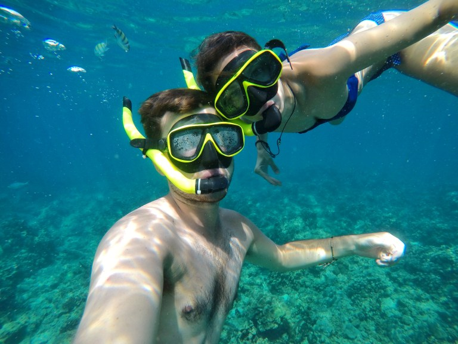 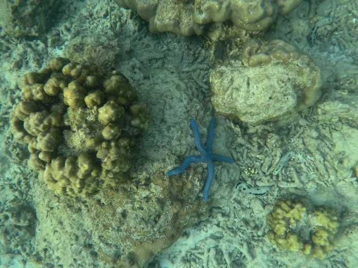 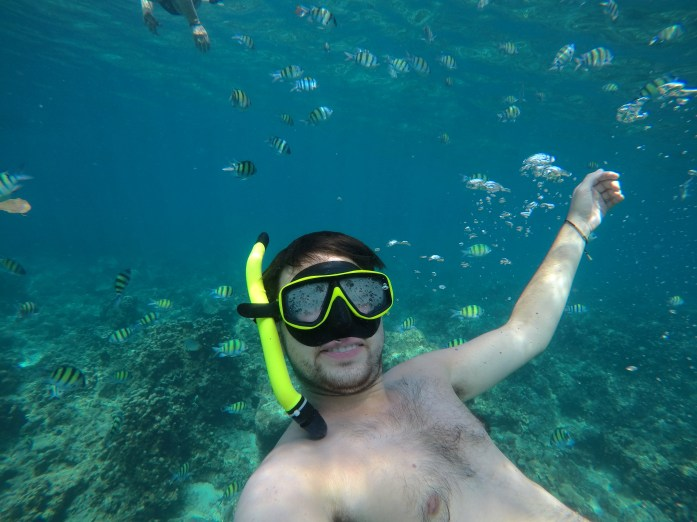 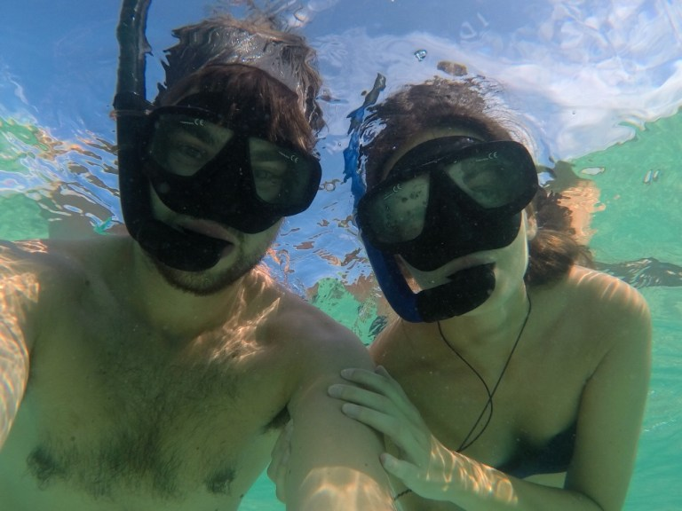E quì la nostra avventura finisce. Dopo questa bella settimana al mare abbiamo sostato a Phuket una notte per poi tornare a Bangkok dove ci aspettava l´aereo di ritorno! Sono volati questi mesi… ma rimarranno impressi nei nostri ricordi e in questi racconti. È stato bello condividere alcuni momenti del nostro viaggio con voi!
Ad Maiora,
Giada & Carlo
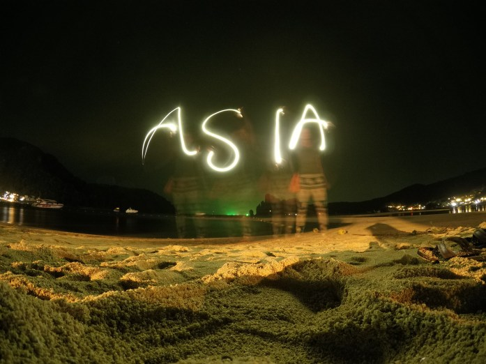 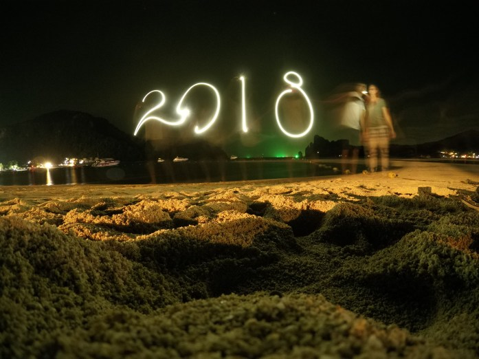
Comment Section